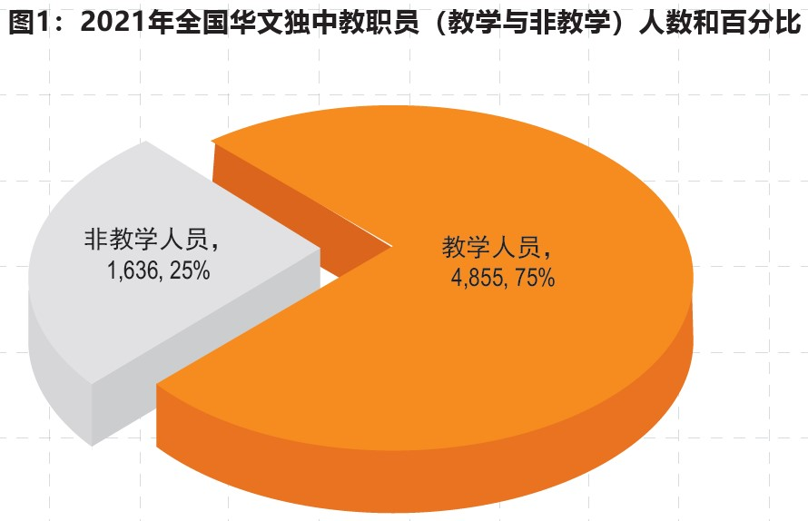
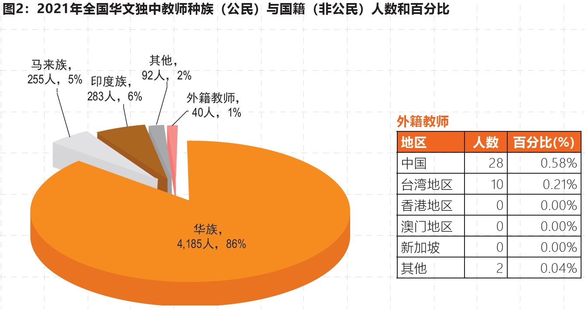
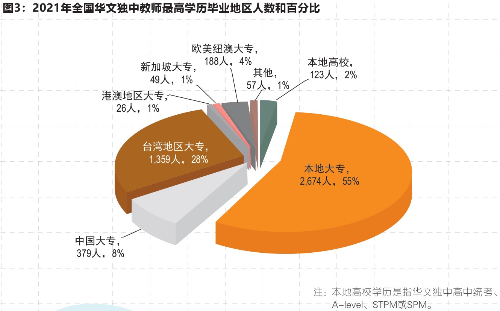
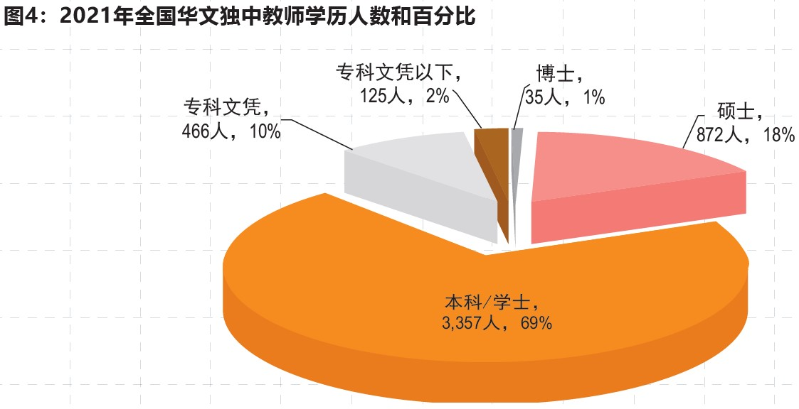
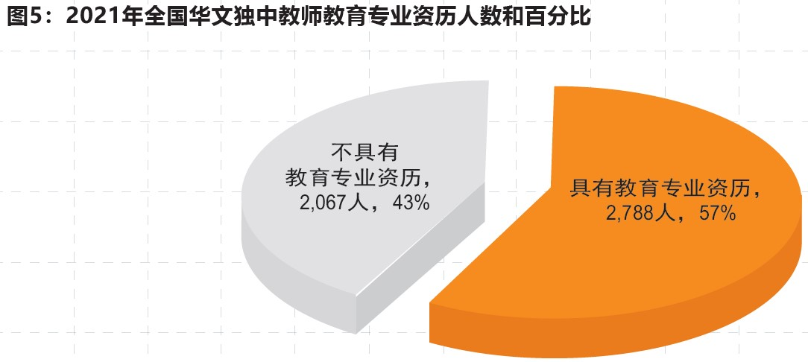
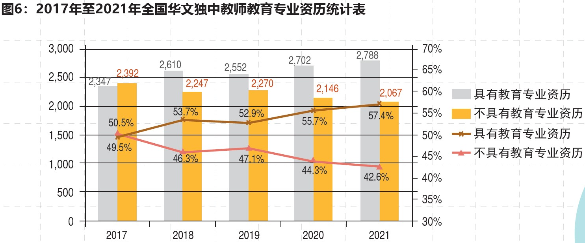

2021年全国华文独中、关丹中华中学
教师基本资料统计简报
2021年全国华文独中教师基本资料统计简报
“2021年度全国华文独中教师资料调查”于2021年4月寄发给60+2所华文独立中学，并于8月完成问卷回收和统计。本问卷调查共发出62份，回收62份，回收率100%。

表1：2021年全国华文独中教学人员（按职称分类）人数
| 教学人员类别 |
人数 |
| 校长 |
62 |
| 署理校长 |
2 |
| 副校长 |
78 |
| 行政主任 |
616 |
| 各科主任 |
627 |
| 普通教师 |
3,470 |
| 合计 |
4,855 |
表2：2021年全国华文独中教师性别统计
| 性别 |
人数 |
百分比（%） |
| 男 |
1,674 |
34.48 |
| 女 |
3,181 |
65.52 |
| 合计 |
4,855 |
100.00 |





表3：2021年1至7月份全国华文独中各学科教师短缺人数（科目按短缺人数依序排列）
| 学科 |
短缺人数 |
| 数学 |
11 |
| 初中科学 |
7 |
| 英文 |
7 |
| 物理 |
5 |
| 体育 |
4 |
| 国文 |
4 |
| 地理 |
4 |
| 华文 |
2 |
| 历史 |
2 |
| 电脑 |
2 |
| 美术 |
2 |
| 化学 |
1 |
| 商业学 |
1 |
| 音乐 |
1 |
| 合计 |
53 |
2021年关丹中华中学教师基本资料统计简报
表1：教职员（教学与非教学，按职称分类）人数
| 教职员 |
人数 |
| 校长 |
1 |
| 副校长 |
1 |
| 行政主任 |
16 |
| 各科主任 |
8 |
| 普通教师 |
29 |
| 非教学行政主任 |
4 |
| 宿舍管理人员 |
3 |
| 职工 |
28 |
| 合计 |
90 |
表2：教师种族（公民）与国籍（非公民）人数
| 种族 |
人数 |
| 华族 |
47 |
| 马来族 |
5 |
| 印度族 |
1 |
| 外籍老师 |
2 |
| 合计 |
55 |
表3：教师最高学历毕业地区
| 毕业地区 |
人数 |
| 本地高校（SPM、STPM、A-level） |
1 |
| 本地大专院校 |
33 |
| 中国大专院校 |
7 |
| 台湾大专院校 |
10 |
| 欧美纽澳大专院校 |
4 |
| 合计 |
55 |
表4：教师最高学历人数
| 最高学历 |
人数 |
| 博士 |
1 |
| 硕士 |
12 |
| 本科/学士 |
40 |
| 专科文凭 |
1 |
| 专科文凭以下 |
1 |
| 合计 |
55 |
资料来源：董总教师教育局2021年8月统计整理。